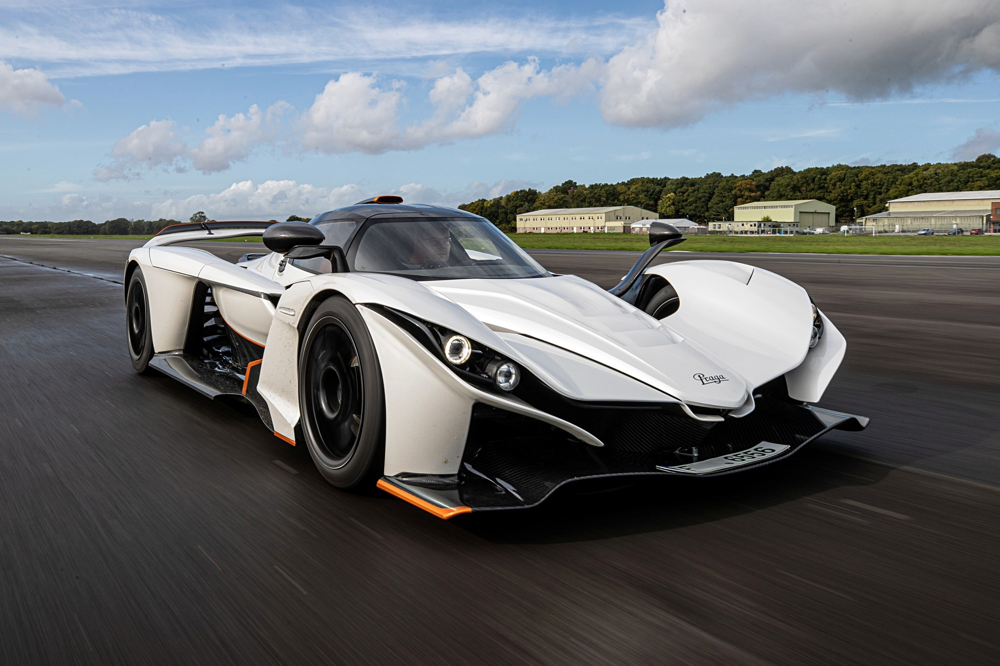
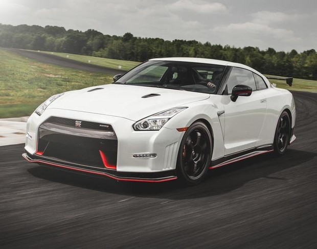

Історія компанії Nissan починається з відкриття в 1911 році заводу Kwaishinsha Co., заснованого сином багатого японського бізнесмена Масухіро Хасімото, який здобув освіту в Детройті. Перший автомобіль компанії називався просто – Dat Car. Це була абревіатура прізвищ інвесторів, але водночас по-японськи слово означає «спритний, моторний» (адже на той час швидкість у 32 км/год дійсно була серйозним показником!). Пізніше, злившись із Jitsuyo Jidosha Co. Ltd і кілька разів перетворюючись, компанія отримала свою нинішню назву й 26 грудня 1933 року стала тим самим Nissan Motor Co., Ltd., який сьогодні відомий усьому світу. Після закінчення Другої світової війни відновлюється виробництво автомобілів Datsun, із конвеєра сходить перший Patrol, потім Austin (згідно з договором з Austin Motor Co., Ltd. (Великобританія), Datsun Bluebird. У 60-х роках, побудувавши ще два заводи й поглинувши Prince Motor Co., Ltd., Nissan істотно розширює свої виробничі потужності й лінійку автомобілів, які виробляються. У 70-х Nissan випускає Datsun 240Z, який став на той час найбільш продаваним спортивним автомобілем у світі! Із цього моменту інженери Nissan починають дивувати автомобільний світ своїми інноваціями: створюють перший експериментальний безпечний автомобіль, впроваджують систему 3-рівневої каталітичної нейтралізації відпрацьованих газів, стають першовідкривачами в розробці та використанні CAD/CAM систем (систем проектування автомобілів за допомогою комп’ютерів і промислових роботів). У листопаді 1981 року був відкритий Технічний Центр Nissan. Досягненнями цього підрозділу стали: трансмісія CVT («варіатор»), ремінь безпеки, який натягується вже в момент різкого гальмування, гібридний автомобіль Altima, NISSAN лідирує у світі в розробці коробок передач із безперервно змінюваним передаточним числом, фірмова назва – Hyper CVT. Встановлювана на автомобілі сегмента D з 1997 року – відкриття абсолютно нового поля діяльності. Цією трансмісією почали оснащувати моделі Primera, Bluebird, Avenir із 1,8 і 2-літровими двигунами. Ці машини – не тільки перші авто із сегмента D, на які встановлюється CVT, а й перші у світі автомобілі з дволітровим двигуном і такою коробкою передач.
Компанія у своєму розвитку не зупиняється ні на секунду, кожен день розробляючи і впроваджуючи нові технології. Яскравий приклад тому – новий кросовер В-класу JUKE, у якому компанія з успіхом змогла об’єднати, здавалося б, неможливе: міць SUV і спортивний стиль у компактному кузові. У 2012 році комплектації JUKE значно розширилися тюнінг-версією від NISMO й музичною комплектацією від Ministry of Sound. Здавалося б, що ще можна очікувати від цього автомобіля, але ні – Nissan у черговий раз довів, що для нього немає нічого неможливого. А чого варте перетворення Nissan Patrol!? Упродовж понад півстоліття, шість поколінь поспіль, він був автомобілем-трудягою, але Patrol сьомої генерації перетворився на люкс-позашляховик для заможної сім’ї. Флагманський Nissan змушує себе поважати й за технічні характеристики: під капотом – бензиновий V8 об’ємом 5,6 л, який видає 400 к.с.і 560 Нм крутного моменту. Салон теж не підкачав – тут усе зроблено за найвищим розрядом. Загалом, творці Patrol домоглися відчуття розкошів, недоступного в попередніх поколіннях флагмана Nissan. Nissan підтримує глобальні екологічні ініціативи: компанія першою почала серійний випуск авто з нульовим рівнем шкідливих вихлопних газів – Leaf. Відтоді, як Nissan почав розробку літій-іонних батарей у 1992 р., йому вдалося збільшити їхню енергетичну ємність на 1100 % і в 16 разів знизити собівартість. За допомогою спеціальної станції швидкого зарядження від мережі постійного струму 50 кВт батареї можна зарядити на 80 % за 30 хвилин. При підключенні ж до домашньої електромережі повне зарядження складе 8 годин. Повного заряду вистачить, щоб Leaf проїхав 160 км.
 